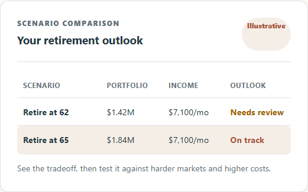

Product direction
Frame the opportunity, define who it serves, and decide what deserves investment first.
Internet Apps helps teams define the right problem, choose a practical path forward, and build digital products that are easier to operate and improve.
Tell us what you are considering. We will discuss fit and a useful next step.
Independent architecture reviews, cloud and migration readiness assessments, and fractional architecture guidance. Start with one application or platform and leave with prioritized findings and a practical improvement roadmap.
Explore a monthly IT reporting pilot built around ticket exports and monitoring summaries. View a fictional sample, then discuss one report template and a fixed scope.
Bring us in to create direction, unblock a delivery effort, or turn an uncertain idea into an informed plan.
Frame the opportunity, define who it serves, and decide what deserves investment first.
Shape an understandable customer experience and a buildable system behind it.
Find the friction in a product program and create a practical path to steadier delivery.
Compare household retirement scenarios, explore market uncertainty, and see how a change in assumptions changes the plan.
The full household planner requires sign-in. The demo lets you explore before creating an account.

Bring household finances, retirement timing, and uncertainty into one understandable experience.
Adjust assumptions, compare scenarios, and review results with interactive charts and saved plans.
A Python web application with a dedicated simulation engine and persistent plan storage.
SQLite stores accounts and saved plans on a persistent disk. The Render deployment configuration serves Flask through Waitress.
This architecture describes the household web planner and is based on its code and deployment configuration.
Start with one decision: what to build, which platform to choose, or how to improve an existing product. We review the customer context, current experience, and technical constraints, then recommend an ordered plan. Scope, timing, and fees are agreed before work begins.
Ask about an assessmentWe make the work visible and specific so it survives the meeting where it was first discussed.
A concise view of the decision, tradeoffs, and why the proposed path is worth backing.
Shared priorities, meaningful constraints, and a plan that connects customer value to delivery reality.
Clearer intent and an ordered next step, rather than a vague mandate to “move faster.”
Internet Apps partners with organizations working through meaningful digital change. We are most useful where customer needs, business goals, and technical realities need to become one workable direction.
We value plain language, durable decisions, and momentum your team owns after the engagement.
Usually when a decision is approaching but the team lacks enough shared clarity to make it confidently — before a major build, a platform choice, or a reset in delivery.
No. Existing products, customer journeys, platforms, and delivery programs can all benefit from a focused review and a clearer plan.
We will clarify the context, decide whether there is a useful fit, and outline a right-sized next step. There is no obligation to begin an engagement.
Share a little context to prepare an email. Review it in your email app, or copy the message into your preferred email service. We will respond personally.
Prefer email?
internetapps.net@gmail.com